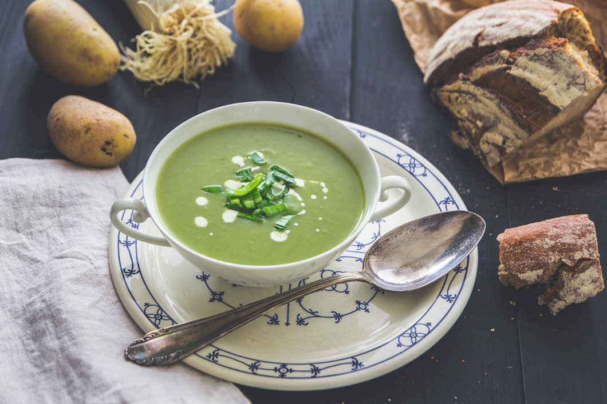

Lauch-Kartoffelsuppe

Lauch-Kartoffelsuppe ist ein Gericht, dass mein Vater oft gemacht hat. Es ist schnell und einfach, deswegen mache ich es auch gerne. Man muss nur aufpassen, den Lauch richtig zu waschen, sonst wird es knirschig!
- 2 dicke Stangen Lauch
- 1l Wasser
- 3 große Kartoffeln
- Salz
- Pfeffer
- Muskat
- 2TL Curry
- Eventuell Sahne
- Butter
- Lauch in RInge schneiden, gut waschen, im Topf mit Butter anschwitzen.
- Mit Wasser aufhießen.
- Kartoffeln würfeln und dazu geben. 30min kochen und pürieren.
- Die Suppe würzen und aufkochen lassen.